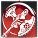
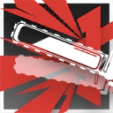

|
 |
武装强袭 | Armed Assault 附赠动作
消耗 1 技力
 下回合开始
下回合开始 |
近卫-强攻手：你擅长用近身的凌厉攻势阻击大量敌人，你的力量甚至可以撕裂钢铁和掩体。
强攻手（Centurion）是近卫职业的其中一个职业分支。强攻手干员普遍使用链锯、巨锤、巨斧等重型武器进行作战，能够对敌人造成巨大的伤害，尤其是在近身战斗中表现出色。强攻手的攻击通常能够同时攻击多个敌人，适合应对大量敌人的情况，而其生存能力也允许他们承受敌人的攻击的同时持续输出。
强攻手通常作为队伍中的主要近战输出力量，在战斗中能够迅速消灭低甲敌人，并在前线继续承担防御的任务。他们有着较强的抗死韧性和对负面状态的抵抗能力，有效避免被敌人的高爆发伤害或者控制效果所压制。
3级：重武专家 Heavy Weapon Specialist
作为一名强攻手，你习得下述特性：
重武专家。你持握一把拥有重型属性的近战武器时，你的AC获得+1加值。
横扫战斗。你应用横扫或散射精通词条时可以额外攻击至多两名而非一名符合条件的敌人。你必须为原本的攻击以及两次追加攻击都分别选取不同的目标。
3级：凌冽攻势 Fierce Thrashing
你是集群歼灭战的对策专家，擅长运用重型武器对复数聚集的敌人展开凌冽的攻势。
当你持用一把重型近战武器时，你对集群类型生物的武器攻击，若命中则可以额外掷一枚武器伤害骰，且忽略目标拥有的任何挥砍伤害抗性。
此外，你未失能时，敌人的 集群战术Pack Tactics 或者类似的特性对你不生效。
7级：武装强袭 Armed Assault
你的力量卓绝且体质坚韧，可以在保护自己的同时发动强袭。你获得下述特性：
战斗自愈。你每次消耗技力发动战技时，每消耗1点技力，你就可以恢复1d10+你体质调整值的生命值。如果你生命值已满，则可以改为获得等量的临时生命值。这些临时生命值在战斗结束时消失。
此外，你习得战技：武装强袭。
|
 |
武装强袭 | Armed Assault 附赠动作
消耗 1 技力
下回合开始 |
10级：顽强复苏 Tenacious Recovery
你习得如何在逆境中重获生机。你获得下述特性：
顽强复苏。如果你在你回合开始时处于失能状态，或者处于浴血期间，你可以解除每个自己身上由你选择的状态以及魔法效应。然后立即恢复2d8+你近卫等级的生命值。你必须完成一次长休才能重新从此特质获益。
武艺百变。当你使用一把精通属性为横扫或散射的武器发动攻击时，除了横扫外，你可以对主目标同时应用另一武器精通属性。这个额外武器精通效应由你自选，可以是：削弱、擦掠或缓速。
15级：攻坚爆裂 Battleburst
在你战技持续期间，你在一回合中可以应用两次武器的横扫或散射精通词条而非一次。
此外，你懂得最大化利用手中的重型武器，范围性地对敌人造成大量爆发伤害。你习得战技：攻坚爆裂。
|
 |
攻坚爆裂 | Battlesaw Burst 附赠动作
消耗 1 技力
本回合结束 |
18级：战斗之魂 Fighting Spirit
你习得如何在战斗中保持坚强的战斗意志。你获得下述特性：
透支。当你要受到伤害时，你可以使要受到的伤害减半，并将以此成功减免的伤害记录下来。你可以连续使用此特性，但累计可以以此吸收的伤害最多等同你最大生命值的一半。
偿还。当你的回合结束时，你重新受到记录所透支的伤害总和，然后清空透支的伤害记录。如果你因为偿还生命值而导致生命值降至0，则你直到完成一次长休前不可再进行透支。